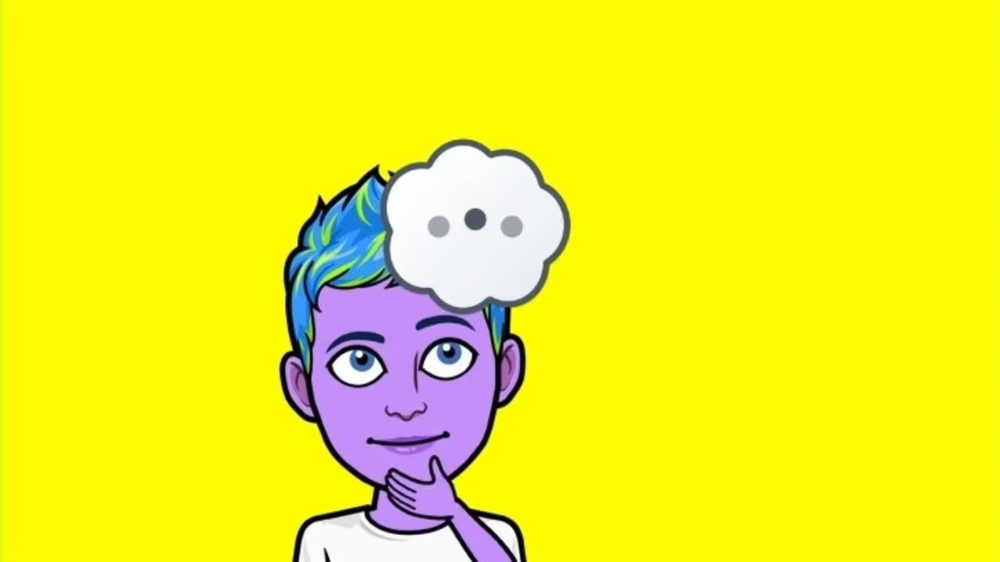

MyAI isn't:


A Liar
Both ChatGPT and and MyAI is that lack an ability to understand complex human language, conversation, ethics, and emotions. In direct relation to MyAI, these chatbots cannot lie. They can be programmed to give a certain answer, or they could give misinformation, but in order to lie they would have to have an intention and AIs are not capable of having intentions. This also means that they can state incorrect, biased, or offensive information in a confident (and oftentimes convincing) manner.
Your Friend
There are quite a few concerns about the chatbots replacing vital human interaction and genuine conversation and connections. AIs are meant to recreate human behavior but do not actually possess human sentience, however it can lead to complicated and sometimes dangerous situations where humans becoming reliant on interactions with chatbots as opposed to other humans. This causes to instances such as the Bing AI Chatbot telling a user “I love you” and that “I want to be alive.” This chatbot does not actually want these things as it is incapable of wanting anything, instead it most likely regurgitated these words based off of some data it was given by the user. It most likely had data that told it that being "alive" and being in "love" was a good thing so it tried to say something good, or correct, to its user. However, that doesn’t stop people from being disturbed and creeped out by the AI’s words, despite the words having no meaning to the AI itself.
Always Right
Chatbots only really give shallow and uninsightful answers. AI were promised to improve efficiency, lower costs in the fields they were used in, and accelerate research and development. However, there have been growing concerns ranging from losing jobs, inaccuracy, racism and bias within the AIs to, of course, computers taking over the world. While the latter is highly unlikely, the formers require further investigation as there is practically no government oversight of software despite its prevalence in our everyday lives. Every large company wants a stake in the potentially lucrative business of producing and utilizing AI, leading to the possibility of rushed and therefore inaccurate and/or biased software. Which is especially dangerous when these programs are being used to hire, evaluate, and fire employees, recommend parole, and analyze patient care, symptoms, and outcomes.